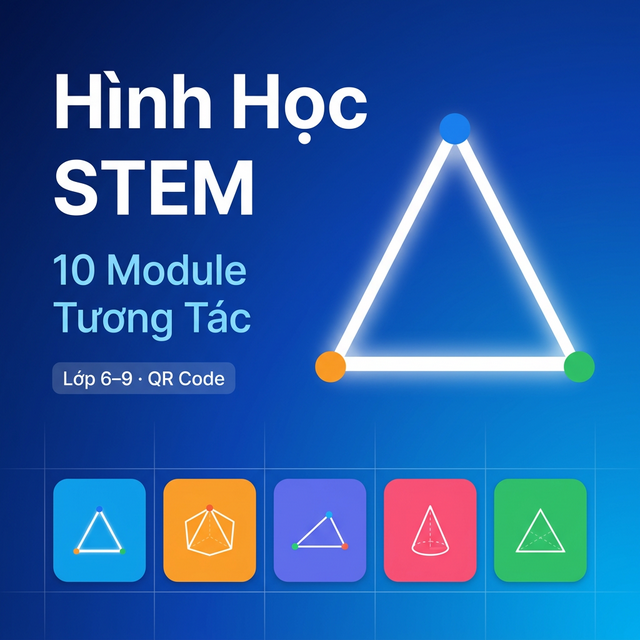

TRƯỜNG
ỨNG DỤNG WEB TƯƠNG TÁC HỖ TRỢ DẠY VÀ HỌC TOÁN HÌNH HỌC THEO ĐỊNH HƯỚNG STEM
Trường THCS Trần Đại Nghĩa - Sở GD&ĐT TP. Đà Nẵng
2026
Môn Hình học ở bậc THCS thường mang tính trừu tượng cao, học sinh khó hình dung các định lý thông qua hình vẽ tĩnh trên sách giáo khoa. Các phương pháp dạy học truyền thống chưa phát huy tối đa tư duy trực quan không gian của học sinh.
- Xây dựng hệ thống 15 Module Hình Học Tương Tác (Lớp 6 đến Lớp 9) dựa trên nền tảng kỹ thuật Web.
- Hỗ trợ giáo viên sử dụng bộ học cụ STEM gắn nam châm kết hợp Mã QR để học sinh quét và tương tác tức thì trên điện thoại.
- Nâng cao hứng thú học tập và năng lực giải quyết vấn đề của học sinh.
Phương pháp nghiên cứu
- Nghiên cứu lý luận: Phân tích chương trình GDPT 2018 (Sách Kết nối tri thức).
- Thực nghiệm sư phạm: Áp dụng thử nghiệm tại trường THCS.
Công nghệ sử dụng
Ứng dụng được thiết kế theo phong cách Claymorphism, tối ưu hoá trên đa nền tảng (PC, Tablet, Smartphone) và không cần cài đặt.
Hệ thống Bao gồm 15 Module tương tác phủ sóng kiến thức trọng tâm hình học cấp THCS:


Tính năng nổi bật của hệ thống (Tính mới)
- Quét Mã QR: Kết hợp học cụ vật lý ở trường và học liệu số.
- Ký hiệu chuẩn Toán học: Tự động hiển thị đánh dấu cạnh bằng nhau, góc vuông, chia cung góc.
- Trắc nghiệm tích hợp: Mini quiz mỗi cuối module giúp kiểm tra kiến thức nhanh.
Mô hình triển khai lớp học
Giáo viên gắn các thẻ nam châm có Mã QR lên bảng từ. Học sinh dùng điện thoại cá nhân quét QR để truy cập công cụ GeoSTEM tương ứng với bài học hiện tại, thoả sức điều hướng hình học.
Triển khai thực nghiệm trên 120 học sinh khối 6, 7 và 8. So sánh giữa nhóm đối chứng (học truyền thống) và nhóm thực nghiệm (dùng GeoSTEM).
| Tiêu chí | Truyền thống | GeoSTEM |
|---|---|---|
| Điểm kiểm tra TB | 6.5 | 8.2 |
| Mức độ hứng thú | 55% | 92% |
| Kỹ năng tự học | Khá | Tốt |
Đánh giá: Phần mềm hoạt động mượt mà, không giật lag. Học sinh chủ động và ghi nhớ định lý lâu hơn thông qua trải nghiệm trực quan.
Kết luận
Dự án đã phát triển thành công bộ công cụ trực tuyến tương tác, là giải pháp chuyển đổi số thiết thực, kết nối giữa thiết bị học cụ vật lý và thư viện số.
Hướng phát triển
- Mở rộng kho module hình học không gian (Lớp 9, Cấp 3).
- Tích hợp AI/Trí tuệ nhân tạo hỗ trợ giải sinh góc nhìn 3D động.
- Đóng gói app đa nền tảng (Android/iOS) hỗ trợ offline.